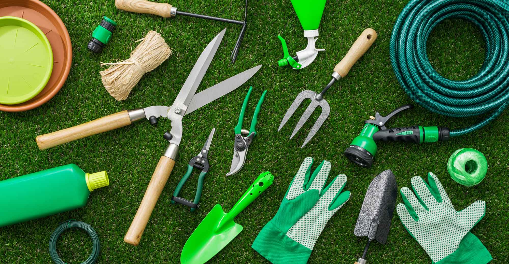

Productos para jardinería

En una ferretería especializada o en una tienda de jardinería, puedes encontrar una amplia variedad de productos diseñados para el cuidado, mantenimiento y embellecimiento de jardines y espacios exteriores.
1. Herramientas de Jardinería:
-
Palas y Piquetas:
- Pala de mano: Ideal para cavar hoyos pequeños, trasplantar plantas o trabajar en jardines pequeños.
- Pala de jardín grande: Utilizada para mover tierra en mayor cantidad o para cavar hoyos más grandes.
- Piqueta o azada: Herramienta para romper el suelo, eliminar maleza o airear la tierra.
-
Rastrillos:
- Rastrillo de jardín: Usado para nivelar el terreno, recoger hojas, restos de césped o tierra suelta.
- Rastrillo de mano: Para áreas más pequeñas o detalles finos en la jardinería.
-
Tijeras de podar y Cortasetos:
- Tijeras de podar: Herramientas de precisión para cortar ramas pequeñas, flores secas y mantener las plantas en buen estado.
- Cortasetos: Utilizados para podar arbustos y setos, ayudando a mantener las formas y tamaños deseados.
-
Cortacésped:
- Cortacésped manual o eléctrico: Esencial para mantener el césped corto y ordenado. Existen modelos manuales (para jardines pequeños) y eléctricos o a gasolina (para céspedes más grandes).
-
Regaderas y Mangueras:
- Regadera de mano: Ideal para el riego de plantas en macetas o en zonas pequeñas del jardín.
- Manguera de jardín: Usada para regar grandes áreas del jardín. Puedes encontrar mangueras de diferentes tamaños y materiales, como goma o PVC.
- Aspersores: Sistemas de riego automatizados que distribuyen el agua de manera uniforme sobre el césped y las plantas.
-
Guantes de jardinería: Para proteger las manos mientras trabajas con tierra, plantas y herramientas.
2. Fertilizantes y Suelos:
3. Plagas y Control de Enfermedades:
4. Semillas y Plantas:
5. Macetas y Contenedores:
-
Macetas de plástico, barro o cerámica:
- Macetas de barro: Son decorativas y permiten que las raíces respiren, pero requieren un cuidado adecuado, ya que pueden romperse fácilmente.
- Macetas de plástico: Son ligeras y duraderas, ideales para cultivar plantas de interior o exterior.
- Jardineras y macetas colgantes: Perfectas para decorar balcones, terrazas o paredes.
-
Baldas para plantas: Para crear jardines verticales o espacios ordenados y organizados en terrazas y patios.
6. Sistemas de Riego:
- Riego por goteo: Un sistema eficiente que distribuye agua directamente a las raíces de las plantas, minimizando el desperdicio de agua.
- Riego automático: Sistemas programables que permiten regar el jardín a determinadas horas del día.
- Aspersores de jardín: Dispositivos que distribuyen agua en forma de lluvia, ideales para regar grandes superficies de césped.
7. Decoración y Elementos para el Jardín:
- Macetas decorativas y jardineras: Hechas de materiales como cerámica, plástico o metal, que agregan estilo y color a los espacios exteriores.
- Fuentes de agua y cascadas: Elementos decorativos que también pueden ayudar a crear un ambiente relajante en el jardín.
- Iluminación exterior: Lámparas solares o de bajo consumo, que ofrecen una iluminación suave y ambiental para las noches en el jardín.
8. Accesorios para Césped:
- Semillas de césped: Para sembrar un césped saludable y denso.
- Rodillo para césped: Para compactar la tierra después de sembrar el césped, asegurando que las semillas entren en contacto con el suelo.
- Rastrillos para césped: Ayudan a airear el césped y distribuir el fertilizante de manera uniforme.
9. Productos para Protección del Jardín:
- Mallas y vallas de jardín: Para proteger tus plantas de animales o crear barreras decorativas.
- Cubiertas para plantas: Para proteger las plantas de condiciones climáticas extremas, como el frío o el calor intenso.
- Sistemas de protección contra aves: Redes o espantapájaros para evitar que los pájaros dañen las plantas.
10. Equipos de Protección Personal:
- Botas de jardinería: Para mantener tus pies secos y protegidos mientras trabajas en el jardín.
- Sombreros o gorras: Para protegerte del sol mientras realizas tareas al aire libre.
- Ropa de protección: Como chaquetas y pantalones resistentes, guantes y gafas de seguridad, para trabajos más intensos.
Consejos al Comprar Productos de Jardinería:
- Elige los productos adecuados para tu tipo de jardín: Si tienes un jardín soleado, elige plantas y productos adaptados a ese clima. Si tu jardín tiene sombra, asegúrate de seleccionar las especies correctas.
- Ten en cuenta el mantenimiento: Algunos productos requieren más mantenimiento que otros, como las herramientas eléctricas o los sistemas de riego automáticos.
- Opta por productos ecológicos: Si te importa el medio ambiente, elige fertilizantes, plaguicidas y tratamientos orgánicos.
- Evalúa el clima y las estaciones: Los productos para el jardín deben ser seleccionados según la temporada (por ejemplo, fertilizantes en primavera o invierno).